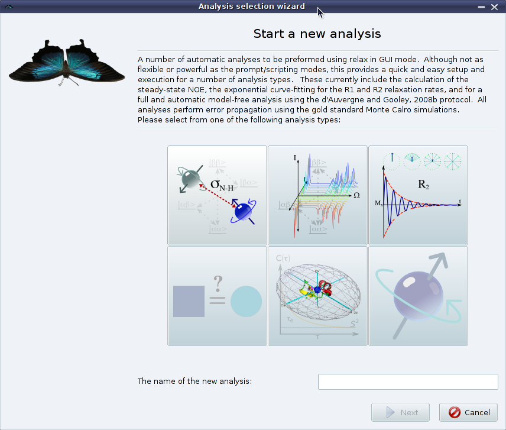

Next: Scripting Up: How to use relax Previous: The data pipe Contents Index
Any data which is not considered global for the molecule, such as diffusion tensors, alignment tensors, global minimisation statistics, etc., are stored within two special structures of the data pipes. Any NMR data or information which is specific to an isolated spin system is stored within special spin containers. This includes for example relaxation data, CSA information, nuclear isotope type, chemical element type, model-free parameters, reduced spectral density mapping values, spin specific minimisation statistics and PCS data. NMR data or information which is defined as being between two spin systems, such as the magnetic dipole-dipole interaction involved in both NMR relaxation and RDC data, interatomic vectors and NOESY data, is stored within the interatomic data containers. The spin and interatomic data containers and their associated data can be manipulated using a multitude of the relax user functions.
|

|
The relax user manual (PDF), created 2019-04-26.